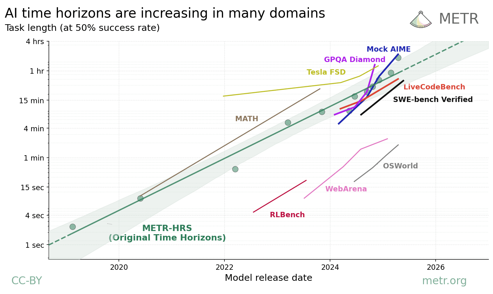
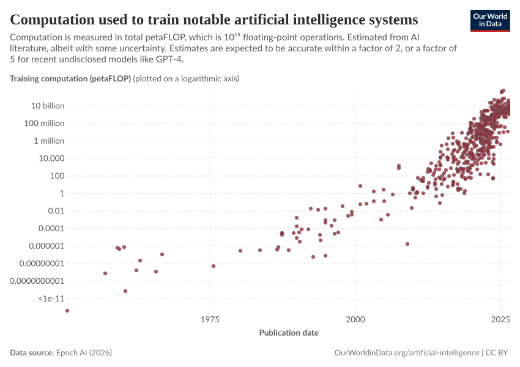
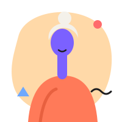

METR, Task-completion time horizons (2026 update)

METR, time horizons across domains

Our World in Data (CC BY), Kiela et al. 2023

Our World in Data (CC BY), Epoch AI
Pick a portrait style and an icon style; the deck and demo use the first of each for now.
Styles of the same synthetic patient. Default is in use (shared/rosa.svg).

Black background; amber replaces the teal. Each colour means one thing everywhere.
The same set drawn five ways.
From lobehub/icons (MIT; the marks belong to their owners).
Published charts the talk uses, with their sources.

